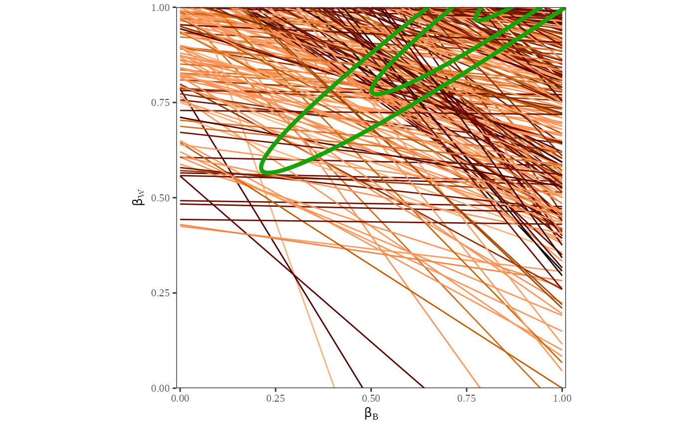
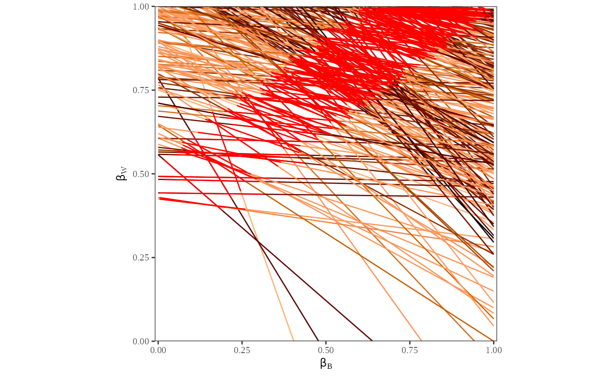

Overview: 2x2 R-commands
In this section we describe the basic commands for 2x2 inference. For this purpose, and without loss of generality, we use the running example from the book portrayed in Table 2.3 (page 31). This example uses the proportion of the voting age population who are black (\(X_i\)), the proportion turning out to vote (\(T_i\)), and the number of voting age people (\({N_i}\)) in each precinct (\(i=1,\ldots,p\)) to infer the fraction of blacks who vote (\(\beta_i^b\)) and the proportion of whites who vote (\(\beta_i^w\)), also in each precinct. (For an extended example of ei, refer to the user’s guide below.) An example of a sequence of these commands are as follows:
formula <- t ~ x
dbuf <- ei(formula = formula, total = "n", data = data)
summary(dbuf)
eiread(dbuf, "betab", "betaw")
plot_tomog(dbuf)
plot_xt(dbuf)In most applications, plot and eiread would likely be run multiple times with different options chosen, and other commands would be included with these five to read in the data (t, x, and n).
ei: To run the main procedure
Use the format, dbuf = ei(formula, total = "n", data = data), which takes three \(p\times 1\) vectors as inputs: t (e.g. the fraction of the voting age population turning out to vote); x (e.g. the fraction of the voting age population who are black); and n (e.g. the total number of people in the voting age population). The output of this procedure is the list dbuf (i.e. an output object of class list called a “data buffer”). The data buffer includes the maximium likelihood estimates and simulated quantities of interest from the ei procedure. After running ei, it is a good idea to save dbuf for further analysis. The output data buffer from ei includes a large variety of different results useful for understanding the results of the analysis. A minimal set of nonrepetitive information is stored in this list (or data buffer), and a large variety of other information can be easily computed from it. Fortunately, you do not need to know whether the information you request is stored or computed as both are treated the same.
To extract information from the data buffer, three procedures are available:
summary: To obtain a general summary of district-level information
summary(dbuf) will produce aggregate information about the ei results. summary will produce a summary of both the maximum likelihood estimates and simulated quantities of interest. It also includes information on the values specified for the prior.
plot: To graph relevant information
For graphics, use plot_**(dbuf);, where dbuf is the ei.object that is the output of ei or ei.sim, and ** completes a function for ready-made graphs. For example, plot_tomog(dbuf) will plot a tomography graph, and plot_xt(dbuf) will display a scattercross graph. Any number of graphs can be selected in plot for output.
Some of the plots can be produced after estimating the maximum likelihood estimates using ei, but before simulating quantities of interest. These initial plots can be useful in determining which priors to include, and the user can opt to choose not to simulate quantities of interest by selecting the option simulate = FALSE. However, for some plots, plot will need the simulated quantities of interest, and therefore can only be plotted when simulate is set to the default, TRUE.
eiread: To obtain relevant information and numerical results
For numerical information, use v <- eiread(dbuf, "name"), where v is the item extracted, dbuf is the data buffer output from ei, and name can be any of a list of output possibilities. For example, eiread(dbuf, "betab") will give a vector of point estimates of \(\beta_i^b\), eiread(dbuf, "ci80w") will give 80% confidence intervals for \(\beta_i^w\). Any number of items can be selected for output. For example, eiread(dbuf, "betab", "ci80b") will produce a list of the point estimates and 80% confidence intervals for $ _i^b$.
User’s Guide: An Example
We now show how to use ei through a simple example. We use data on voter registration and racial background of people from 268 counties in four Southern U.S. States: Florida, Louisiana, and South Carolina. These are the same data used in Chapter 10. The data include the total voting age population in each county (n), the proportion of the population in each county who are black (x), and the proportion of the population in each county who are registered to vote (t). The proportion of whites registered can be computed by (1-x). You can load the data into R using the command
library(ei)
#> Loading required package: eiPack
#>
#> Attaching package: 'ei'
#> The following object is masked from 'package:stats':
#>
#> filter
data(matproii)The statistical goal is to estimate the fraction of blacks registered (\(\beta_i^b\)) and the fraction of whites registered (\(\beta_i^w\)) in each county. These quantities of interest are generally unknown. However, ei also includes an option that allows the user to assess the reliability of the ei algorithm when the true quantities of interest are known. To illustrate the use of this “truth” option, the data also include the true fractions of registered blacks () and the true fraction of registered whites (tw).
The Basic EI Algorithm
To begin, we perform ecological inference by calling the function ei. ei first computes and maximizes a likelihood distribution based on the inputed data, then estimates the county-level quantities of interest based on the possible values, or ``bounds", for each county and the overall likelihood distribution.
To run this algorithm, at a minimum we need to have three vectors. Two vectors, t and x, contain the aggregate known information about the counties of interest. In this example, t is the proportion of voters registered in each county, and x is the proportion of blacks in each county. These two vectors contain aggregate information, since we are interested in the proportion of voters in each country who are black. The last vector we need is n, the number of people of interest in each county. In this example, n is the number of people of voting age.
We proceed by performing ecological inference without covariates on the data:
formula <- t ~ x
dbuf <- ei(formula = formula, total = "n", data = matproii)
#>
[36mℹ
[39m Running 2x2 ei
#>
[36mℹ
[39m Maximizing likelihood for `erho` = 0.5.
#>
[36mℹ
[39m Running 2x2 ei
[36mℹ
[39m Maximizing likelihood for `erho` = 3.
#>
[36mℹ
[39m Running 2x2 ei
[32m✔
[39m Running 2x2 ei
[38;5;249m[5ms]
[39m
#>
#> ⠙ Beginning importance sampling.
#>
[32m✔
[39m Beginning importance sampling.
[38;5;249m[4s]
[39mTo include a covariate on \(\beta_i^b\) simply specify a covariate vector for the option , or a string that refers to the name of the covariate in the dataset. Similarly, to include a covariate on \(\beta_i^w\), specify a covariate vector for for the option , or a string that refers to the name of the covariate in the dataset.
Next, we use summary(dbuf) to obtain general information about the estimation.
summary(dbuf)
#>
#> ── Summary ─────────────────────────────────────────────────────────────────────
#>
#> ── Erho ──
#>
#> 3
#>
#> ── Esigma ──
#>
#> 0.5
#>
#> ── Ebeta ──
#>
#> 0.5
#>
#> ── N ──
#>
#> 268
#>
#> ── Resamp ──
#>
#> 22
#>
#> ── Maximum likelihood results in scale of estimation (and se's) ──
#>
#> Bb0 Bw0 sigB sigW rho Zb0 Zw0
#> 1.5401538 2.1756468 -0.8303568 -1.1678612 2.2897777 0 0
#> 0.3873066 0.3755203 0.2293752 0.2103118 0.3116942 0 0
#>
#> ── Untruncated psi's ──
#>
#> BB BW SB SW RHO
#> 1.191991 1.258423 0.4365937 0.3108075 0.9775168
#>
#> ── Truncated psi's (ultimate scale) ──
#>
#> BB BW SB SW RHO
#> 0.6048007 0.8312595 0.2028157 0.1356076 0.8937001
#>
#> ── Aggregate Bounds ──
#>
#> betab betaw
#> lower 0.2125903 0.7025925
#> upper 0.9754242 0.9200036
#>
#> ── Estimates of Aggregate Quantities of Interest ──
#>
#> mean sd
#> Bb 0.5523778 0.01595427
#> Bw 0.8231626 0.00454704
#>
#> ── Precision ──
#>
#> 4
#> The summary function provides basic information about the ecological inference estimation, the maximum likelihood estimates on three scales, and an overall summary of the quantities of interest. First, it reports the values of the priors used in ecological inference (Erho, Esigma, Ebeta). It also reports the number of counties in the dataset (N), as well as the number of importance sampling iterations required to produce estimates of the quantities of interest (resamp).
summary also produces information both about the maximum likelihood estimates and the quantities of interest. First, it provides the maximum likelihood estimates in the scale of estimation. Next, it provides the values of the MLEs when they are transformed into an untruncated bivariate normal distribution. These estimates provide information about the location of the highest density of estimates for the proportion of blacks who are registered to vote and the proportion of whites who are registered to vote. Last, it provides the values of the MLEs on the ultimate truncated bivariate normal scale. These estimates are an unweighted average of the fraction of blacks and whites registered to vote over all the counties in the sample. In this example, the ei algorithm predicts that the unweighted average of the proportion of blacks registered to vote across counties is 0.57 and the unweighted average of the proportion of whites registered to vote is 0.82.
Finally, summary produces information on aggregrate quantities of interest. The aggregate bounds are the mean of the bounds on the proportions of black and white voters, weighted by the population in each county. The aggregate quantities of interest are the weighted mean of the proportion of registered blacks and the proportion of registered whites in each county. In this example the weighted average proportion of blacks who are registered is 0.57, and the weighted average proportion of whites who are registered is 0.82.
Extracting Quantities of Interest
eiread extracts quantities of interest in a list format from the object dbuf. For example,
bb.out <- eiread(dbuf, "betab", "sbetab")extracts the point estimates and estimated standard deviations for \(\beta_i^b\), the estimates of the proportion of registered blacks in each county. The user can then use bb.out$betab to obtain a vector of the point estimates for \(\beta_i^b\), and bb.out$sbetab to obtain a vector of the standard devations for \(\beta_i^b\). eiread() takes any number of arguments to extract any number of quantities of interest from the data buffer. ?eiread can be used to find a list of quantities of interest that are available in ei. Among the most useful arguments are "betab" and "betaw", which report the point estimates; "sbetab" and "sbetaw", which report the standard deviations of the point estimates; and "CI80b and "CI80w", which report the confidence intervals of the point estimates.
Plotting in EI
Plotting ei output is extremely useful for understanding the results of the ecological inference algorithm and diagnosing problems with estimation. First, we graph a tomography plot of the data (Figure 1).
plot_tomog(dbuf)Tomography Plot with ML Contours:
plot_tomog(dbuf, options = list(contour_ML = TRUE))
Tomography Plots with Point Estimates
plot_tomog(dbuf, options = list(points = TRUE))Tomography Plots with Confidence Intervals
plot_tomog(dbuf, options = list(CI = 0.95))
Each line on the map represents the possible values for \(\beta_i^b\) and \(\beta_i^w\) for one county. The contour lines identify the portion of the lines that have the highest probability of containing the true estimates of \(\beta_i^b\) and \(\beta_i^w\). These contour lines provide information about the overall pattern of registration. Note that the area with highest probability is in the upper right-hand corner, where the proportion of whites registered is between \(0.75\) and \(1\) and the proportion of blacks registered is between \(0.5\) and \(1\). Further, we see that the lines are clustered in the upper half of the figure, indicating that the possible values of \(\beta_i^w\) will have a lower variance than the possible values of \(\beta_i^b\).
Figure 2 is a double plot of the point estimates and their confidence intervals. To compute this, we call plot to generate two graphs: a tomography plot with the point estimates generated from the algorithm, and a tomography plot with 80% confidence intervals on the point estimate.
plot_tomog(dbuf, options = list(points = TRUE, CI = 0.95))This plot is useful to visualize the estimates and confidence intervals for each county. We can see that the point estimates and confidence intervals are clustered in the same area as the contours from the previous plot. Further, the point estimates and confidence intervals only fall on the lines that indicate the possible values of \(\beta_i^b\) and \(\beta_i^w\).
Figure 3 shows plots that indicate the distribution of \(\beta_i^b\) and \(\beta_i^w\). To produce these plots, run:
plot_density(dbuf, options = list(parameter = "betab"))
plot_density(dbuf, options = list(parameter = "betaw"))Density plots are useful to visualize the location and uncertainty of the point estimates. The green line represents the density of the simulated point estimates, and the black tick marks are a rug plot of the point estimates,s \(\beta_i^b\) and \(\beta_i^w\). You can see that the variance of the point estimates from \(\beta_i^b\) is much higher than the variance of point estimates from \(\beta_i^w\).
Figure 4 portrays the results of the ei algorithm by plotting the proportion of blacks in each country by the proportion of registered voters in each county. To produce this plot, use:
plot_xt(dbuf)The circles around each of the points in this plot are proportional to the population of each county. The graph represents the likelihood estimates by plotting the expected number of registered voters given the proportion of blacks in each county, represented by the yellow line. The red lines in the plot are the 80% confidence interval around the regression line. The higher uncertainty in the estimates of black registration can be seen by the absence of points on the right hand side of the graph and the larger confidence interval on the right hand side of the graph, where the proportion of blacks in the county is relatively large.
Finally, if we have data on the true proportions of registered blacks and registered whites in each county, as we do in this dataset, we can use plots in ei to assess how well the algorithm works on the given data. To do this, rerun the ei algorithm, adding the truth vectors, and tw as the truth argument.
truth <- cbind(matproii$tb, matproii$tw)
formula <- t ~ x
dbuf_truth <- ei(formula = formula, total = "n", data = matproii, truth = truth)
#>
[36mℹ
[39m Running 2x2 ei
#>
[36mℹ
[39m Maximizing likelihood for `erho` = 0.5.
#>
[36mℹ
[39m Running 2x2 ei
[36mℹ
[39m Maximizing likelihood for `erho` = 3.
#>
[36mℹ
[39m Running 2x2 ei
[32m✔
[39m Running 2x2 ei
[38;5;249m[2ms]
[39m
#>
#> ⠙ Beginning importance sampling.
#>
[32m✔
[39m Beginning importance sampling.
[38;5;249m[4.2s]
[39mThen use plot to compare the estimates of the ei algorithm to the true proportions of white and black registered voters in each county.
# Comparing Estimates to the Truth at the County Level
plot_truth(dbuf_truth)The “truth” plot (Figure 5) has four components. The top two figures have the posterior densities of the aggregate quantities of interest \(B^b\) and \(B^w\). These densities tell us in what range the algorithm predicts that the point estimates lie. For example, the density of \(B^b\) is wider than the density of \(B^w\), indicating that our estimates of \(B^w\) lie in a smaller range than than our estimates of \(B^b\). The true aggregate values, computed from the data we inputed, are indicated by the vertical bars. The fact that the true \(B^b\) and \(B^w\) are within the densities we computed confirms that the model is did a good job at predicting the true proportions of registered white and black voters.
The bottom two figures in Figure 5 plot the estimated values of \(\beta_i^b\) and \(\beta_i^w\) against the true values. The size of each of the circles plotted is proportional to the number of blacks in the county in the first graph and the number of whites in each county in the second graph. If the estimated values were exactly equal to the true values, all of the points would be on the \(45^{\circ}\) line. Because the points fall quite close to the \(45^{\circ}\) and do not deviate from the line in a systematic way, we can see that the ei algorithm predicts the point estimates quite well.
References
Gary King, A Solution to the Ecological Inference Problem: Reconstructing Individual Behaviour from Aggregate Data, Princeton University Press (1997).
Gary King and Langche Zeng, “The Dangers of Extreme Counterfactuals.” Political Analysis, 14:2, pp 131-159, 2006.
Lau et al, “eiPack: Ecological Inference and Higher-Dimension Dtaa Management.” http://www.olivialau.org/software.
Rosen et al, “Bayesian and Frequentist Inference for Ecological Inference: The RxC Case.” Statistica Neerlandica, 55:2, pp 134-156, 2001.
Useful documentation also avalaible at http://gking.harvard.Edu.
For R language see http://www.r-project.org.
Venables, W.N.,and Ripley, B.D., Statistics and Computing, Springer (2002).